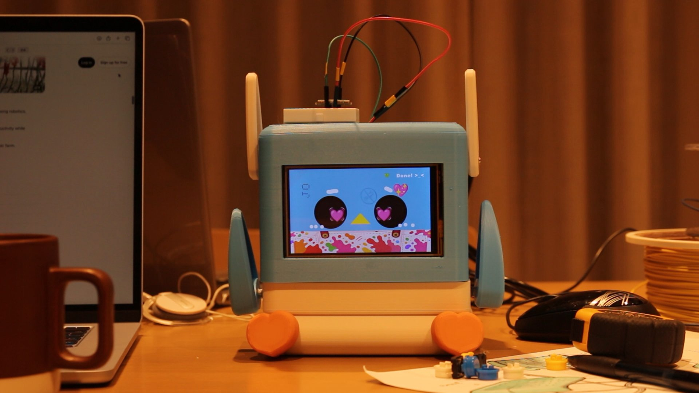

POLUTO
A Physical AI
Work Companion

Beyond the screen
POLUTO explores how an embodied companion might help people notice AI agents’ activity—and moments that need human input—in the physical workspace.
Why POLUTO?
Work moves between screens.
And away from them.
As AI agents work asynchronously, people may move between digital tasks and hands-on activities. Keeping track of progress—and noticing when an agent needs help—can mean checking the screen again and again.
POLUTO explores another possibility: using expressions and physical movement to make these moments noticeable in the surrounding workspace.
Meet POLUTO
A little presence.
A way to stay aware.
The interaction concept brings together expressions on a display and physical movement. Five proposed states describe what an AI agent is doing and when a person might need to step in.
Proposed interaction states
- Ready
- Available for a new task.
- Working
- A task is in progress.
- Needs You
- Human input is requested.
- Error / Blocked
- An error or obstacle is preventing progress.
- Done
- The task has finished.
POLUTO is in development. Its form, capabilities, and interaction design may change as the project evolves.